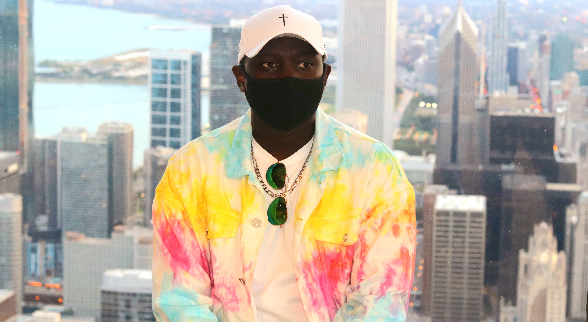

Designer, Engineer, Activist
About Me
Hey, I'm Linus - A rising sophomore and a Computer Science Major at McCormick School of Engineering and Applied Science at Northwestern University in Evanston, Illinois.
I am also an activist for social justice and equity. Having experienced the challenges of joining the competitive tech field as person of color, I have sought different way of connecting with different people from traditionally underrepresented groups in tech. Through this I have participated in different conferences and joined different organizations with the objectives to bridge this gap most notably the National Society of Black Engineers(NSBE).
Outside class I enjoy listening to music from diverse genres. I may probably explore working in music therapy in the future. I’m also trying my hands in competitive programming as a way of keeping active and connecting to other people interested in tech. When I’m taking a break from all these I’m probably gaming; fun fact I play FIFA better than my friend Kelvin.
Currently I am exploring different forms of creative content creation, watch out my YouTube Channel and Podcast. Topics will vary from trending tech, photography and anything else worth talking about